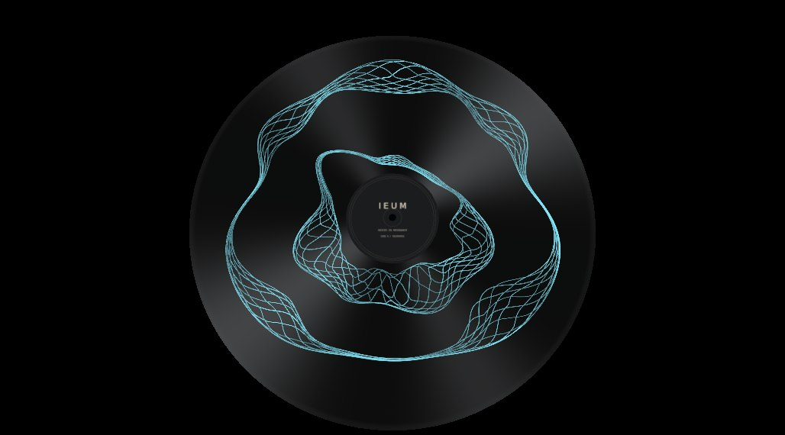
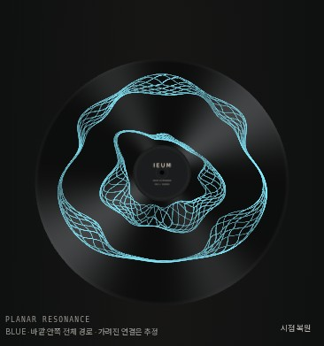

IEUM RESONANCE / BLUE REFERENCE STUDY
파랑의 바깥·안쪽 전체 경로
현재 비교본은 요구 미충족입니다. 파랑은 한 사람이므로 안쪽과 바깥쪽이 같은 굴곡·접힘·선과 입자의 특성을 공유해야 하지만, 두 경로를 독립 추적해 서로 다른 특성으로 만들었습니다. 두 성분이 분리된 것만으로 반복 구현의 진전으로 판정하지 않습니다. 실행 기하는 아직 수정 전입니다.
원본에서 파랑을 분리하고 두 전체 경로를 추적
원본 위 녹색·노란색은 바깥·안쪽 대표 경로입니다. 해당 방향에 파랑이 관측된 구간은 실선, 가려져 보간한 구간은 자홍색 점선으로 표시했습니다. 실선도 원본의 개별 실을 정확히 복원한 것은 아닙니다.
실제 WebGL 렌더
현재 선들은 나란히 이어지는 성향이 강합니다. 두 성분의 분리와 원본의 자연스러운 직조 재현은 구분해 검토합니다.
2D↔3D 대응 확인
같은 선의 평면 좌표를 유지한 채 높이를 올렸습니다. 이번 검증은 파랑 단색 구조 범위입니다. 입자·실제 오디오·합성·장시간 안정성의 완료를 뜻하지 않습니다.
후속 진단 · 순서를 바꿔도 원본 접힘은 미충족
기존 바깥·안쪽 각각 12선의 반경 순서 교환은 모두 0회였습니다. 고정된 분위수 순서가 평행 띠를 만듭니다. 순서 교환 후보는 교차를 만들었지만 원본 대신 규칙적인 격자로 보여 기각했습니다. 기본 파랑 비교본은 유지합니다.
기각 진단 직접 실행
2D·중간 전환·3D 검사에서 JS·콘솔 오류 0. 모바일은 resize 캡처가 데스크톱 이미지를 재사용하는 오류를 고쳐 새 390px 페이지에서 다시 캡처했습니다. 실제 이미지 폭은 366px이며 선 밀집은 남아 있습니다. 기능 검사를 시각 완성 근거로 사용하지 않습니다.
실제 390px 모바일 재검증

PNG 너비까지 검증합니다. 선 밀집 미해결.